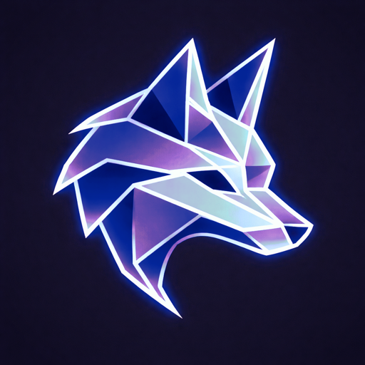

AR camera tracking for virtual production
trkAR は、撮ったテイクをどこにも送りません。S3・Google Drive・Frame.io・社内の NAS などへの連携は、Blender アドオン trkAR Camera の「テイクのあとに流すコマンド」で、自分で用意したスクリプトを動かしてつなぎます。
仕様は INTEGRATION.md、見本は examples/s3_upload.py (テイクを Amazon S3 に上げる) です。
このリポジトリを手元に取り、エージェントに「trkAR のテイクを自分の ○○ に上げるフックを作って」と頼んでください。リポジトリの CLAUDE.md に、エージェント向けの手順と守ること (認証情報を書かない、など) を書いてあります。
git clone https://github.com/lunacava/trkAR.git cd trkAR claude # 「テイクを自分の S3 の my-bucket に上げるフックを作って」
Releases から trkar_camera-<版>.zip (0.9.x までは artrk_camera-…) を落とし、Blender 4.2 以降で 編集 > プリファレンス > アドオン > ▼ > ディスクからインストール で入れます。NDI を使うには NDI Tools などの NDI ランタイムが必要です。アドオンは GPL-3.0-or-later です。
アドオンは GPL-3.0-or-later、見本のコードは Apache-2.0、仕様などの文書とサンプルのシーンは CC BY 4.0 です。使ってくれたら、ひとこと連絡をもらえるとうれしいです (ライセンスの条件ではなく、お願いです): 「使っています」の Issue
trkAR never uploads your takes anywhere. To connect it to S3, Google Drive, Frame.io or your own storage, set an after-take command in the Blender add-on trkAR Camera; it runs your script when a recording stops and when an export finishes, passes the take folder as arguments and environment variables, and shows the result in the panel.
See INTEGRATION.md (spec, Japanese) and examples/s3_upload.py. With a coding agent such as Claude, clone the repository and ask it to build a hook for your service — CLAUDE.md tells the agent how.
License: add-on GPL-3.0-or-later, examples Apache-2.0, docs and sample scenes CC BY 4.0. If you use trkAR, I'd love to hear about it (optional, not a license condition): open a "Used by" issue.
Get the add-on zip from Releases and install it in Blender 4.2+ via Edit > Preferences > Add-ons > ▼ > Install from Disk. NDI needs an NDI runtime such as NDI Tools. The add-on is GPL-3.0-or-later.